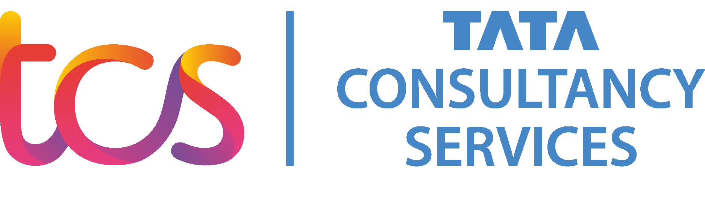
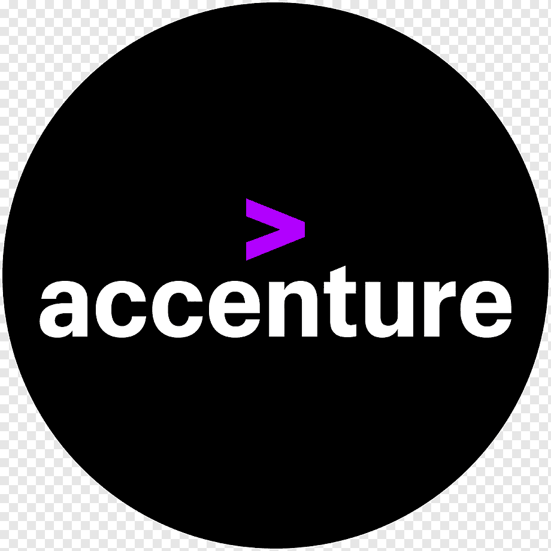

Placement Services
Placement trainings for College students:We provide comprehensive, result-oriented placement guidance to help you secure your dream job. Access exclusive on-campus and off-campus recruitment drives through our vast corporate network. Master aptitude, logical reasoning, and verbal ability tests to breeze through first-round screenings. Build concrete confidence for intensive technical interview rounds and coding assessments. Ace your final interactions with personalized coaching for HR and behavioral interviews. Participate in rigorous mock placement drives to conquer real-time interview anxiety. Gain access to curated, company-specific preparation material for top-tier employers. Benefit from continuous job alerts and application tracking until you are successfully placed. Leverage our stellar track record of transforming ambitious students into employed professionals. Walk into your graduation with a confirmed offer letter and a clear career path.
Sourcing and Recruitment Services
Strategic Talent Acquisition for Companies hiring for experienced: Operating as an authorized third-party recruitment partner dedicated to identifying, attracting, and securing high-caliber human resources. Vendor Empanelment: Serving as an approved, official staffing partner on the preferred vendor lists (PVL) for global IT giants like TCS, CTS, HCL, and Hexaware. Experienced Professional Focus: Targeting mid-to-senior level "lateral" hires who possess proven domain expertise, rather than entry-level or fresher talent. Multi-Channel Sourcing: Utilizing advanced headhunting, professional networks (like LinkedIn), specialized job portals, and deep internal databases to discover niche talent. Rigorous Screening & Vetting: Conducting thorough technical, behavioral, and cultural assessments to ensure candidates align perfectly with strict corporate benchmarks. SLA and Compliance Adherence: Operating under demanding Service Level Agreements (SLAs) regarding strict turnaround times, high submission quality, and background verification compliance. Talent Pipeline Management: Maintaining a continuous, proactive pipeline of both active and passive job seekers ready for rapid deployment into critical client projects. Niche Technology Mapping: Specializing in matching complex, modern skill sets (such as Cloud Architecture, AI/ML, DevOps, and Full-Stack development) with enterprise-scale project demands. End-to-End Facilitation: Managing the complete recruitment lifecycle, from initial candidate outreach and interview coordination to salary negotiation and notice-period engagement. Scalability Support: Empowering large-scale IT enterprises to scale their project teams efficiently, reducing their internal HR overhead while accelerating their time-to-market.
Our Clients

